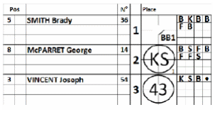
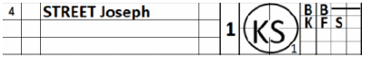

Annexe 5
Feuille de comptage des lancers
Avant le début du match, un second scoreur sera affecté à la rencontre. Sa mission consistera à noter les actions de jeu, en collaboration avec le premier scoreur, mais aussi à comptabiliser les lancers afin de faciliter la saisie des données. Cette tâche s'effectue sur une fiche conçue spécifiquement à cet effet.
Il s’agit d’une version simplifiée de la feuille de scorage, car elle ne comporte pas de colonnes pour les statistiques défensives ou offensives.
| Pour utiliser cette fiche, inscrivez simplement la composition de l'équipe en précisant la position et le numéro de maillot de chaque joueur. Utilisez la colonne de gauche comme sur une feuille de scorage classique pour noter les actions de jeu. Dans les petites cases, consignez les lancers successifs en vous aidant de la légende prévue à cet effet : « B » pour une balle (ball), « K » pour un « strike » (pris), « S » pour un « swing » dans le vide, « H » si le frappeur est atteint par un lancer, « F » pour une fausse balle (foul ball), et un point lorsque le lancer est mis en jeu. |
 |
En cas de retrait sur tentative de vol (pick-off), utilisez le chiffre 1 pour un retrait en première base, le 2 pour un retrait en seconde base et le 3 pour un retrait en troisième base.
Pour la première manche, seul le nombre de lancers effectués durant cette manche est indiqué, accompagné de l’abréviation « NP », dans la colonne de gauche.
Pour les manches suivantes, la colonne de gauche doit indiquer le nombre de lancers effectués lors de chaque manche, tandis que la colonne de droite présente les totaux cumulés.
Dès qu’un nouveau lanceur monte sur le monticule, commencez à inscrire le nombre de lancers sur la deuxième ligne. Si un quatrième lanceur entre en jeu, utilisez à nouveau la première ligne.

|
 |
Lorsqu’un nouveau lanceur monte sur le monticule au cours d’une séquence au bâton, cela doit être clairement indiqué sur la feuille de suivi des lancers. Tracez un trait dans les cases restantes et commencez sur une nouvelle ligne. |

Vérifiez, après chaque manche, si le nombre de lancers figurant sur la fiche correspond au nombre de lancers saisis dans le système.
N’oubliez pas : utilisez la feuille de suivi des lancers de la même manière que la feuille de match habituelle. Cela signifie que le lanceur de l’équipe doit être inscrit sous l’alignement des frappeurs de sa propre équipe.